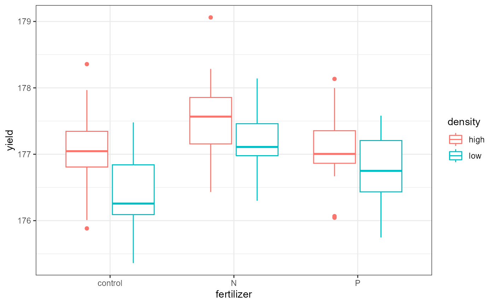
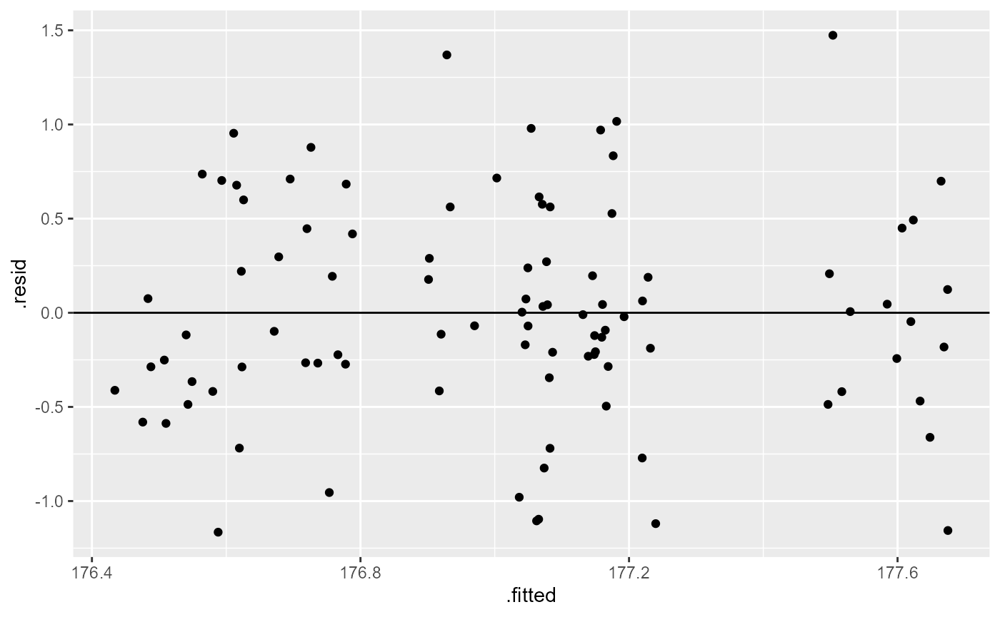
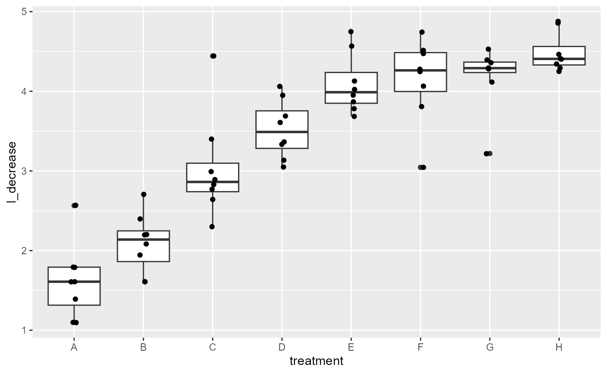
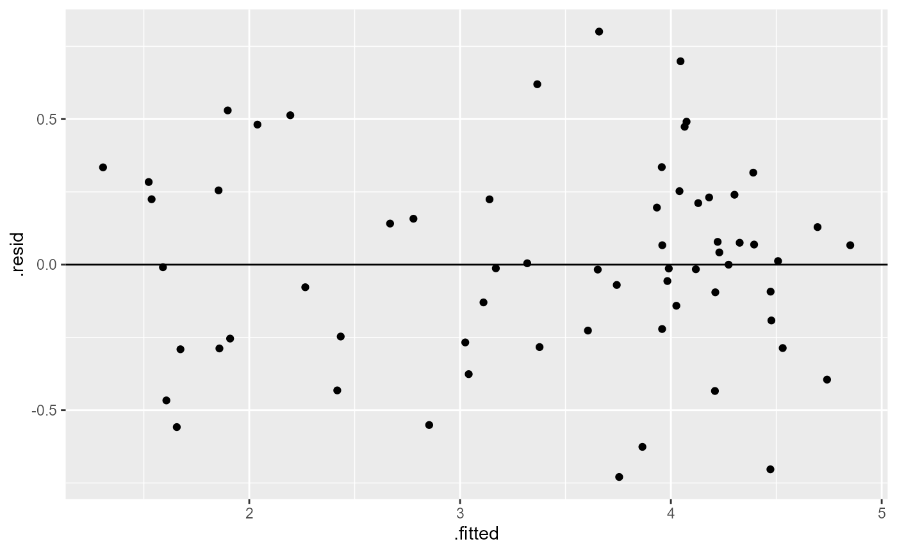

Lab 11: Factorial ANOVA
ENVS475: Experimental Analysis and Design
Spring, 2023
Source:vignettes/articles/lab_11_factorial-anova.Rmd
lab_11_factorial-anova.RmdAbout
This lab will demonstrate how to perform a two-way ANOVA’s (without interaction) in R. This includes checking assumptions, fitting the linear model, interpreting and visualizing the results.
Preliminaries
Packages
For this lab, we will be using the dplyr and
ggplot2 packages. Make sure both packages are installed on
your computer, and then run the following code:
Data
We will use the crop_anova.csv data which can be
downloaded on D2L. Load the data by running the following command:
crop <- read.csv("data/crop_anova.csv")Analysis
In the previous homework, we analyzed a subset of the data and looked for significant differences in the yield based on fertilizer type. This time, we will keep both the plant density the fertilizer treatment to run a factorial analysis. We will just be looking at the main effects, and will hold off on the potential interaction effect until a future class.
Let’s look at the full data, and see what the treatment levels are.
names(crop)## [1] "density" "block" "fertilizer" "yield"
dim(crop)## [1] 96 4
head(crop)## density block fertilizer yield
## 1 low I control 177.2287
## 2 low I control 177.1255
## 3 low I control 176.2749
## 4 low I control 177.4795
## 5 low I control 176.1083
## 6 low I control 176.2390
distinct(crop, density)## density
## 1 low
## 2 high
distinct(crop, fertilizer)## fertilizer
## 1 control
## 2 N
## 3 PFor this analysis, we have two factors (density and fertilizer). The Density factor has two levels: High, and the Fertilizer factor has three levels: control, N (Nitrogen fertilizer), and P (Phosphorous fertilizer).
We can also use the tab() function to see how many
observations are in each group:
table(crop$density, crop$fertilizer)##
## control N P
## high 16 16 16
## low 16 16 16We can see that there are 16 observations in each combination of all levels for both factors. We call this a completely balanced ANOVA design.
Plot data
Let’s start by plotting all of the data. We will save time and consider all the grouping variables.
ggplot(crop,
aes(x = fertilizer,
y = yield,
color = density)) +
geom_boxplot() +
theme_bw()
If you wanted to get a visual indication of the main effects, you could plot the grouping variables one at a time.
- i.e., set both the
xandcolorvariable above tofertilizerfor one plot, and then change them both todensityfor the second plot.
Check pre-analysis assumptions
Assumption: equal variance
These data look to have approximately equal variation across the treatment groups. The “low-N”, and “high-P” groups look a little more narrow, but this shouldn’t be an issue.
Assumptions: Normality of residuals
We can also check to see if the residuals are normally ditributed by creating a QQ-plot.
ggplot(crop,
aes(sample = yield)) +
stat_qq()+
stat_qq_line()Most of the observations (points) fall close to the reference line. There’s a few that are off near the low end of the data, but this should be ok.
Factorial ANOVA
Hypotheses for main effects
In a factorial ANOVA analysis (without interactions), we have a number of main hypotheses equal to the number of factors in our design. In this case, we have the density and the fertilizer factor, so our hypotheses are:
ANOVA with lm()
Assumption: Equal variance of residuals
Let’s first fit a linear model to the data, and check our post-model fit assumption with a fitted vs. residuals plot.
crop_lm <- lm(yield ~ density + fertilizer, data = crop)
ggplot(crop_lm,
aes(x = .fitted, y = .resid)) +
geom_point(
position = position_jitter(
width = 0.1,
height = 0)) +
geom_hline(yintercept = 0)
In this plot, the absolute magnitude of the maximum and minimum y-values are approximately the same (-1.25, 11.25), although there are a couple of points above the 1.25 region. However, there is no clear pattern in the spread of the points, so this looks OK.
ANOVA table
In order to get the statistical values for the ANOVA table, we need
to use the anova() function on the model fit object.
anova(crop_lm)## Analysis of Variance Table
##
## Response: yield
## Df Sum Sq Mean Sq F value Pr(>F)
## density 1 5.1217 5.1217 15.3162 0.0001741 ***
## fertilizer 2 6.0680 3.0340 9.0731 0.0002533 ***
## Residuals 92 30.7645 0.3344
## ---
## Signif. codes: 0 '***' 0.001 '**' 0.01 '*' 0.05 '.' 0.1 ' ' 1You can see that we know have a row for each of the main factors (density, fertilizer) as well as a third row for the residuals (unexplained variation).
We interpret the F-value for each factor as before, but in this case, we can say that these are the main effects of that factor, while accounting for the variation in the other factor.
The p-value is an indication of the likelihood of observing the data (i.e., F-value, signal / noise ratio) we have if the null hypothesis was true. In this case, both p-values are < 0.002 which is less than \(\alpha = 0.05\), and we can conclude that there is a significant main effect for each factor.
PLotting main effects separately
It can be helpful to plot the data considering only one factor at a time to see the main effects.
ggplot(crop,
aes(x = fertilizer,
y = yield,
color = fertilizer)) +
geom_boxplot() +
theme_bw()This plot shows the average yield based on fertilizer type, ignoring the effect of the density factor.
ggplot(crop,
aes(x = density,
y = yield,
color = density)) +
geom_boxplot() +
theme_bw()This plot shows the average yield based on density type, ignoring the effect of the fertilizer factor.
ANOVA Interpretation
Remember that the hypotheses for ANOVA are either that all means are the same, or that at least one was different. ANOVA can only tell us that there is a difference. Therefore, out interpretation would look something like this:
Based on a 2-way ANOVA (no interaction), there were significant main effects of planting density (\(F_{1, 92}= 15.31, p < 0.001\)) and fertilizer addition (\(F_{2, 92}= 9.07, p < 0.001\)).
In order to see which means are different, we can view the
summary output from the lm() model as we did before. In
this lab, I’m going to jump straight into the post-hoc Tukey HSD
test.
Multiple Comparisons
Tukey’s HSD
As mentioned above, the results of the ANOVA test indicated significant differences. As researchers, we most likely want to know which groups are different. For example, telling farmers that density anf fertilizer are important isn’t overly helpful. Telling them which fertilizer to use and which density to maximize their yield would be helpful.
Before we run the Tukey HSD test, we need to run an ANOVA on our
linear model fit using the aov() function.
# ANOVA of our lm model
crop_aov <- aov(crop_lm)
# Tukey's test on the plant_aov object
crop_tukey <- TukeyHSD(crop_aov)
# print out results
crop_tukey## Tukey multiple comparisons of means
## 95% family-wise confidence level
##
## Fit: aov(formula = crop_lm)
##
## $density
## diff lwr upr p adj
## low-high -0.461956 -0.6963916 -0.2275205 0.0001741
##
## $fertilizer
## diff lwr upr p adj
## N-control 0.5991256 0.2547318 0.94351936 0.0002219
## P-control 0.1761687 -0.1682251 0.52056252 0.4452958
## P-N -0.4229568 -0.7673506 -0.07856306 0.0119381Here, we can see that we have a section for each factor, and a row for every pairwise combination. The table gives us an estimated and 95% CI for the differences, as well as an adjusted p value.
Tukey HSD Interpretation
Density
The estimated difference in yields between low and high density is -0.49(95%CI -0.70, -0.23), and this is a significant change (adjusted p-value < 0.001).
Fertilizer
The interpretation for fertilizer is a bit more complex.
There was no significant change in yield with the addition of Phosphorous fertilizer (95% CI of estimates change: -0.17, 0.52). However, the addition of Nitrogen increased yield compared with no fertilizer by 0.60 (95%CI 0.25, 0.94) kg, and the yield for N was 0.422 (95%: 0.77, 0.08) kg greater than with Phosphorous fertilizer, and both of these differences were significant (adjusted p-values = <0.001 and 0.012, respectively).
NOTE that I switched the sign on the P-N comparison to fit the narrative. This makes the comparison N-P.
We can also plot these differences. Any coefficient estimates which cross zero are not considered to be significantly different.
plot(crop_tukey)Blocking
The crop_anova data also includes a blocking variable.
We can include this in our analysis by adding it as a factor to our
lm() formula. I will not go through the full process of
plotting the data and checking the assumptions here, but for a formal
analysis you should do it again including all of the grouping
variables.
I’m not familiar with the original design of this experiment, but presumably the different blocks were fields when the different treatments were randomly assigned.
Blocking factor in lm()
## Analysis of Variance Table
##
## Response: yield
## Df Sum Sq Mean Sq F value Pr(>F)
## density 1 5.1217 5.1217 15.2238 0.0001840 ***
## fertilizer 2 6.0680 3.0340 9.0184 0.0002693 ***
## block 2 0.4861 0.2431 0.7225 0.4883291
## Residuals 90 30.2784 0.3364
## ---
## Signif. codes: 0 '***' 0.001 '**' 0.01 '*' 0.05 '.' 0.1 ' ' 1Here, we can see that the blocking factor was not significant. In other words, there was not a high degree of variation associated with the individual block.
You can then continue the analysis by looking at the coefficient
estimates from the lm() model, as well as perform post-hoc
multiple comparisons, but I will skip that in this lab.
Note that the residual_{df}, F-values, and p-values all changed slightly with the addition of a blocking factor. Opinions differ on how to proceed with a non-significant blocking variable. Some say that since it’s not significant you can drop it and re-run the analysis without it (i.e., the analysis at the beginning of this lab). Dropping the block will increase your degrees of freedom and can give you slightly more statistical power.
Other people say that you had the block in the original design and it’s disingenuous throw it out now, and you should keep it in the analysis and report the lack of significance.
This discussion foreshadows a more complex philosophical as well as technical concept of model selection. We most likely won’t have time to dive into that topic in this class, but just know that there are entire books written on when, how, and where to perform model selection. Luckily, much of this information is also online, so if and when you find yourself in that situation there are plenty of resources available for you to dive in. (Or, more realistically, your boss / adviser / etc. will probably have an opinion or a preferred method, so you will do that for a while until you get more experience and then one day you’ll get interested in it and go down a Wikipedia rabbit hole and come out the other side having ordered multiple books online which you will probably never fully read, but will still come to your own preferred method through a combination of trial-and-error, discussions with colleagues, and divination. Not that I’m speaking from personal experience or anything…)
Complex blocking designs: the Latin Square
The Latin Square is a specific design which uses two blocking factors
to control for variation. The OrchardSprays data we worked
with previously was a Latin Square design. We can recreate this design
visually using the matrix() function.
## decrease rowpos colpos treatment
## 1 57 1 1 D
## 2 95 2 1 E
## 3 8 3 1 B
## 4 69 4 1 H
## 5 92 5 1 G
## 6 90 6 1 F
matrix(OrchardSprays$treatment, 8, 8)## [,1] [,2] [,3] [,4] [,5] [,6] [,7] [,8]
## [1,] "D" "C" "F" "H" "E" "A" "B" "G"
## [2,] "E" "B" "H" "A" "D" "C" "G" "F"
## [3,] "B" "H" "A" "E" "G" "F" "C" "D"
## [4,] "H" "D" "E" "C" "A" "G" "F" "B"
## [5,] "G" "E" "D" "F" "C" "B" "A" "H"
## [6,] "F" "A" "C" "G" "B" "D" "H" "E"
## [7,] "C" "F" "G" "B" "H" "E" "D" "A"
## [8,] "A" "G" "B" "D" "F" "H" "E" "C"We can see that each row and column has the letters A-H in it exactly once. In this instance, the design was to control for variability in space (N-S, E-W) across a large agricultural field setting, but the rows and columns could also be specific treatment levels.
For example, in the homework data set, each row is a different fertilizer treatment, each column is a different tillage treatment, and then each unique position of row and column is a different seed variety.
## treatA treatB treatC treatD treatE
## fertil1 "A" "C" "B" "D" "E"
## fertil2 "E" "B" "C" "A" "D"
## fertil3 "C" "A" "D" "E" "B"
## fertil4 "B" "D" "E" "C" "A"
## fertil5 "D" "E" "A" "B" "C"Data wrangling
Change blocking variables to factors
You may have noticed that the row and column position variable is described with a number, and R will interpret this as a continuous variable:
class(OrchardSprays$rowpos)## [1] "numeric"We want R to treat these blocking variables as different groups
(called factors in R-speak), not as a continuous variable. To do that,
we can use our old friend mutate. In the following code, we
will make new variables for rowpos and colpos,
and add _f to the end of the name to indicate that they are
now “factors”.
## decrease rowpos colpos treatment rowpos_f colpos_f
## 1 57 1 1 D 1 1
## 2 95 2 1 E 2 1
## 3 8 3 1 B 3 1
## 4 69 4 1 H 4 1
## 5 92 5 1 G 5 1
## 6 90 6 1 F 6 1This is a good opportunity to remind you all to think about how you’re going to analyze your data before you enter it. If you know your going to be running an ANOVA or some other type of categorical analysis, enter row position as “r1” instead of 1. Likewise, column position 2 could be “c2”. This way, when you load your data into R, it automatically treats it as a categorical variable, and then you don’t have to mess around with changing the class of the variable. (It will also prevent you from running a full analysis, interpreting the results and writing it up, only to find out that your blocking variables are continuous instead of categorical. This is exactly what just happened to me as I was writing this lab exercise.)
Transform response variable
Skip this in week 11
You may recall from the homework that the OrchardSprays
data failed its assumption checks. There are a few options for you to do
when this occurs. I’m hoping to go through them in more detail later,
but for now, suffice it to say that we can transform the variable to see
if that fixes our problems. A common transformation is a
log-transformation.
Log transformation
The following code takes the natural logarithm (log())
of the response variable, decrease and saves it in a new
variable.
## decrease rowpos colpos treatment rowpos_f colpos_f l_decrease
## 1 57 1 1 D 1 1 4.060443
## 2 95 2 1 E 2 1 4.564348
## 3 8 3 1 B 3 1 2.197225
## 4 69 4 1 H 4 1 4.248495
## 5 92 5 1 G 5 1 4.532599
## 6 90 6 1 F 6 1 4.510860Let’s quickly check the assumptions again to see if this transformation fixed the problems.
Grouped-box plots: Normal variance
ggplot(os_transform,
aes(x = treatment,
y = l_decrease))+
geom_boxplot() +
geom_point(position = position_jitter(
width = 0.05
)) 
Variance between groups looks much more equal the “G” group is a little small, but looks much better than before.
QQplot: Normality of residuals
ggplot(os_transform, aes(sample = l_decrease)) +
stat_qq() + # plot qq points
stat_qq_line() # reference line
This still doesn’t look ideal, but linear model analyses are fairly robust to this assumption, so it’s probably OK.
Fit the model
In the modified os data, the blocking factors are
indicated by the rowpos_f and colpos_f
variables. The level of pesticide is indicated by the
treatment level, and the transformed response variable is
the l_decrease variable (measuring the decline in bee
numbers). We can incorporate this into an lm() analysis by
adding more predictor variables.
os_lm <- lm(l_decrease ~ treatment + rowpos_f + colpos_f, data = os_transform)Fitted Vs. Redisual: Equal variance of residuals
ggplot(os_lm,
aes(x = .fitted, y = .resid)) +
geom_point(
position = position_jitter(
width = 0.05)) +
geom_hline(yintercept = 0)
Once again, not perfect, but looks much better than it did before.
ANOVA with two blocking factors
For this analysis, we have three factors, each of which has 2 or more levels:
- treatment factor: Levels A-H.
- Row position factor: Levels 1-8
- Col position factor: Levels 1-8
anova(os_lm)## Analysis of Variance Table
##
## Response: l_decrease
## Df Sum Sq Mean Sq F value Pr(>F)
## treatment 7 62.904 8.9862 51.5196 < 2e-16 ***
## rowpos_f 7 2.768 0.3955 2.2672 0.04726 *
## colpos_f 7 0.850 0.1214 0.6960 0.67498
## Residuals 42 7.326 0.1744
## ---
## Signif. codes: 0 '***' 0.001 '**' 0.01 '*' 0.05 '.' 0.1 ' ' 1Here, we find that there was a significant main effect of treatment (\(F_{7, 42} = 51.52, p < 0.001\)). This means that the decrease in bees did change based on herbicide treatment level.
We also found a significant main effect of row position (\(F_{7, 42} = 2.27, p < 0.05\)). This means that the decrease in bees did change just based on the row that the data was collected in. In other words, the number of bees varied across the experimental field independent of the treatments.
It’s worth noting that despite this finding, the effect of treatment was still noticeable, and the results reported above are accounting for the differences in row position. Another way of saying this is that the effect of treatment was significant while controlling for the effect of row position.
As an example, we can run the analysis without the
rowpos_f variable.
## Analysis of Variance Table
##
## Response: l_decrease
## Df Sum Sq Mean Sq F value Pr(>F)
## treatment 7 62.904 8.9862 43.6227 <2e-16 ***
## colpos_f 7 0.850 0.1214 0.5893 0.7613
## Residuals 49 10.094 0.2060
## ---
## Signif. codes: 0 '***' 0.001 '**' 0.01 '*' 0.05 '.' 0.1 ' ' 1The overall conclusions from our second model did not change. However, if you look closely at the output of our second model, you will notice that the F-value is lower in the second model, even though we have more degrees of freedom (and hence, more statistical power) since we have one fewer predictor variables. In this case, the F-value is still so high that our results are highly significant, but this lower F-value means that we are explaining less of the variation in the data.
Another way of showing this is the adjusted R2 value from
out lm() output.
# full model, with rowpos_f blocking
summary(os_lm)$adj.r.square## [1] 0.8511974
# second model, without rowpos_F blocking
summary(os_lm_2)$adj.r.square## [1] 0.82426Again, the differences here are not striking and the overall
conclusions are the same. However, the second model explains less of the
variation, indicated by a lower Adjusted R2 value. Including
the rowpos_F block in the analysis explains more of the
variation than ignoring it.
There are situations where including a grouping variable can explain enough of the variation that the main effect of other factors goes from insignificant to significant (this might happen in your homework, wink wink).
Again, this brings up interesting questions about model selection, which we will leave unanswered for the time being.